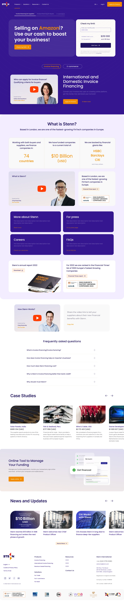
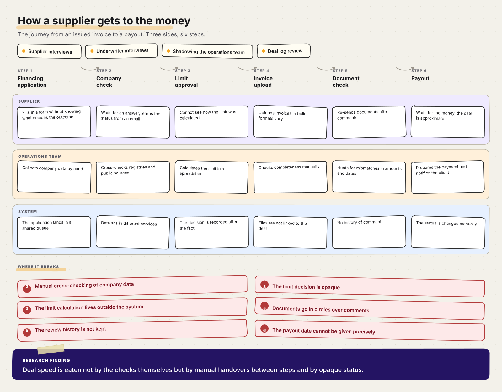
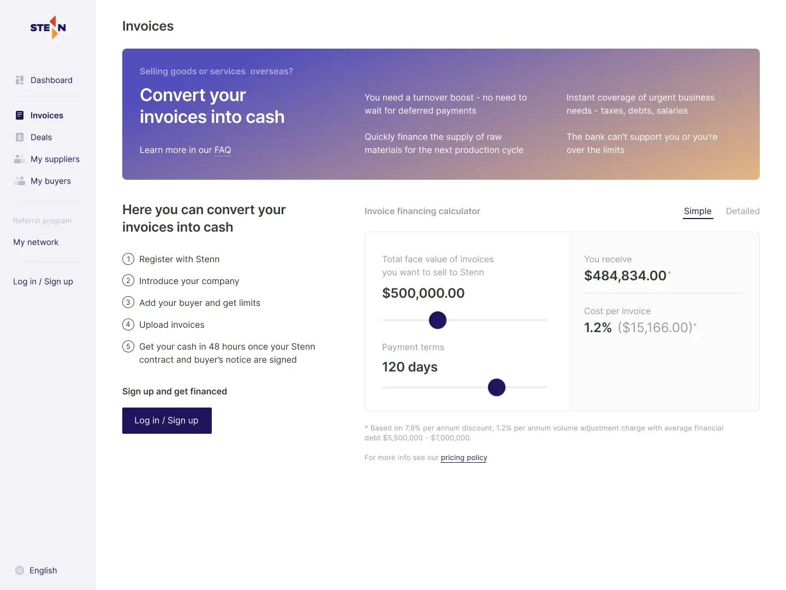
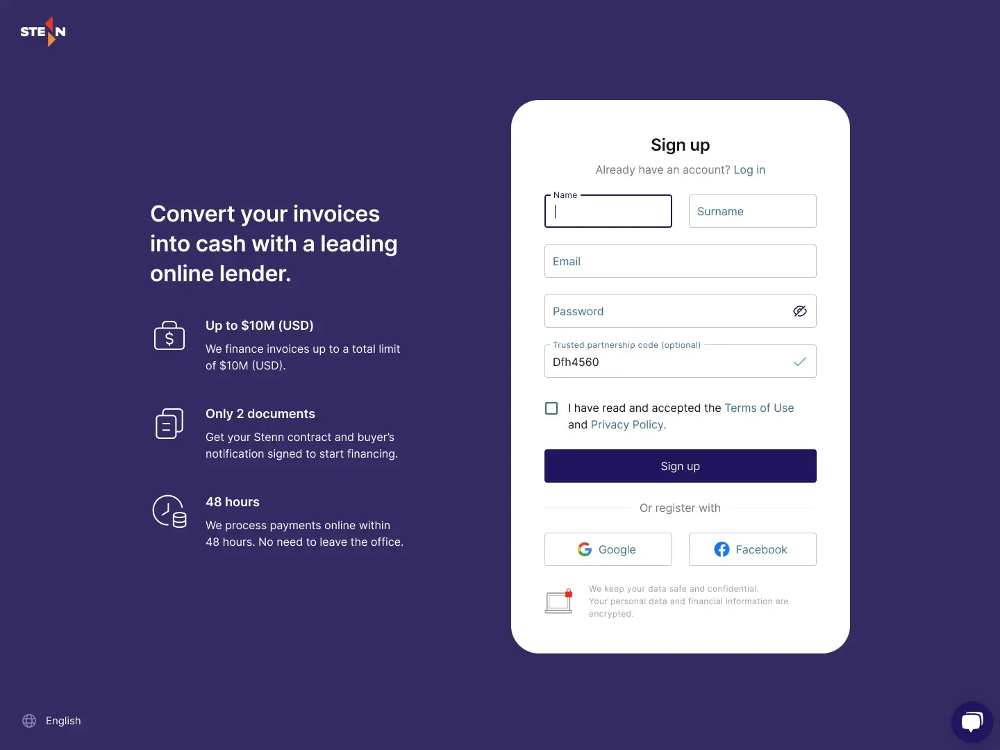
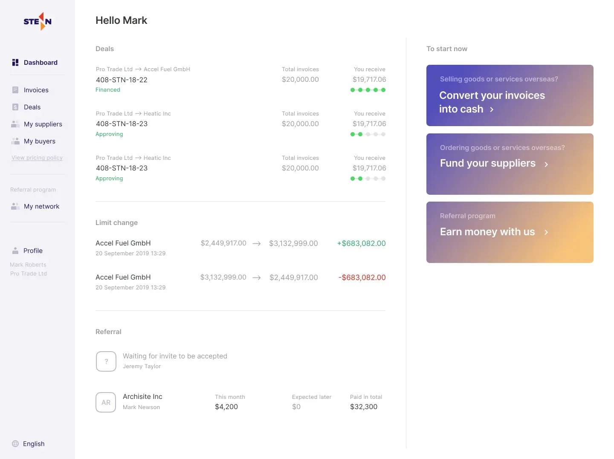
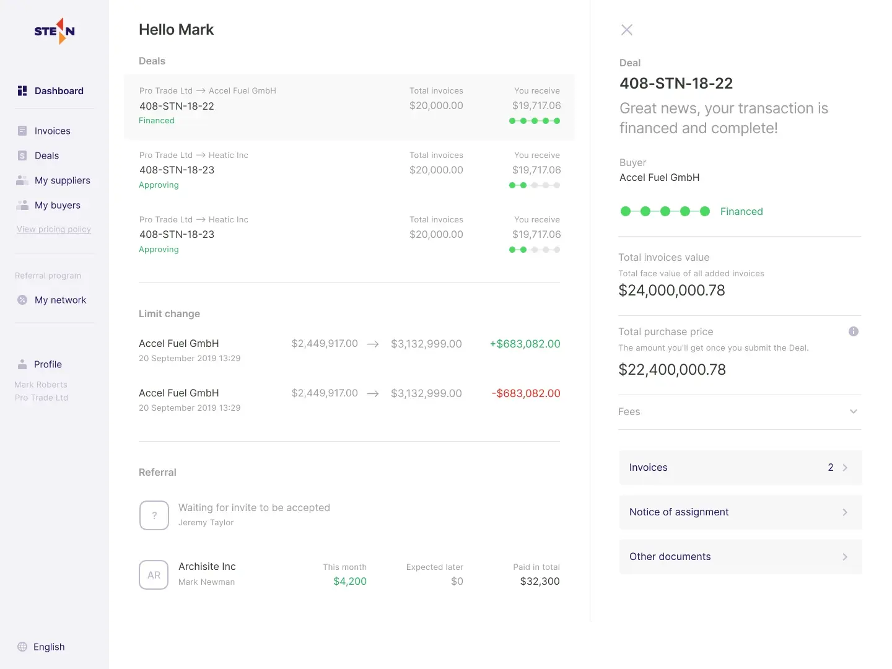
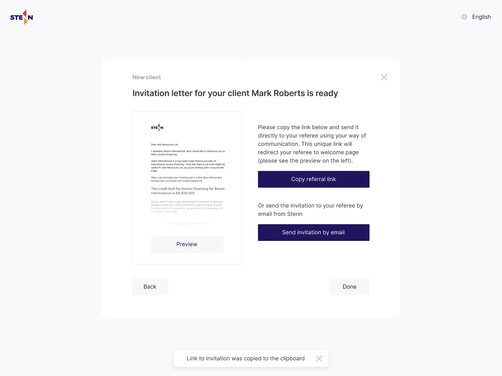
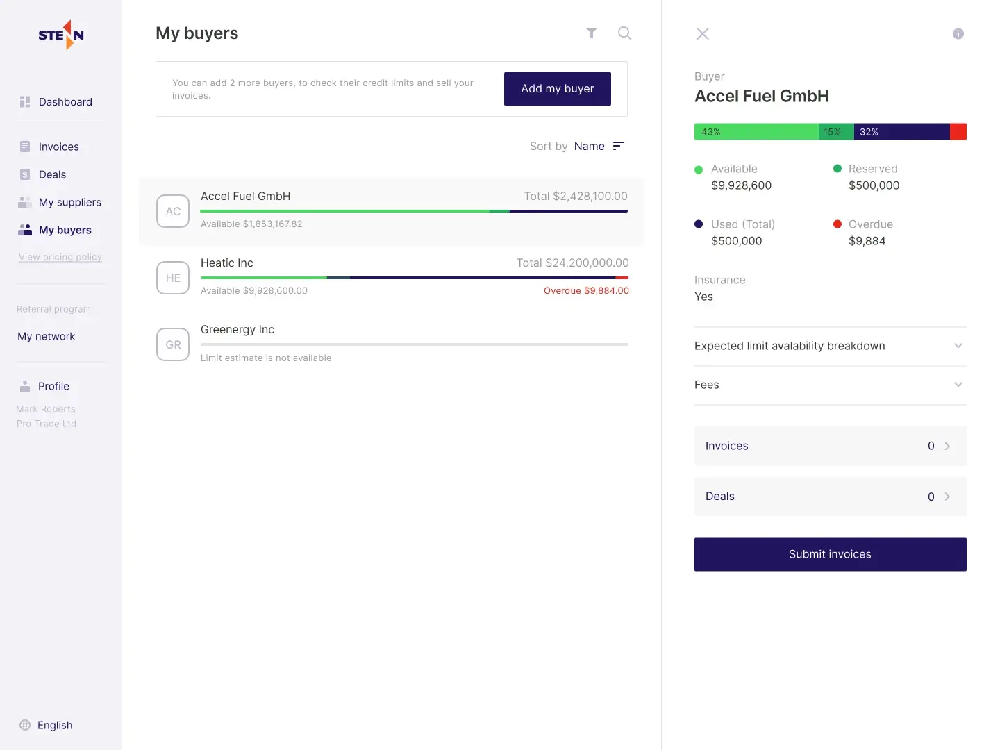

Role: Product Designer
Scope: journey map, deals, document checks, workflow, dashboard, analytics and the design system.
Stages: Discovery • UX research • Process mapping • UX/UI • Design system • Delivery
Stenn Technologies is an international factoring company providing working capital to exporters and suppliers worldwide. Based in London.

Use the slider on the right to scroll the page. Open full size ↗
Scale the platform and cut the time each operation takes – so that a growing number of deals does not require a proportionally bigger operations team.
Before touching any screens I mapped the journey itself: how a supplier gets from application to money and where the deal stalls. I talked to suppliers and underwriters, watched the operations team at work and went through deal logs – they show what interviews never mention.

The main finding: time is eaten not by the checks themselves but by manual handovers between steps and by the opacity of status – the client cannot tell where the deal is, and the team rebuilds the context every time.
The workflow is the end-to-end deal scenario: the supplier calculates what they will receive for their invoices, signs up, adds a buyer and a limit, uploads invoices and follows the deal through to payout. This path used to run on email threads and manual checks by account managers – we turned it into one continuous process inside the platform.






Let’s work together
Tell me about your product, team and timeline. We can discuss a project or a role.